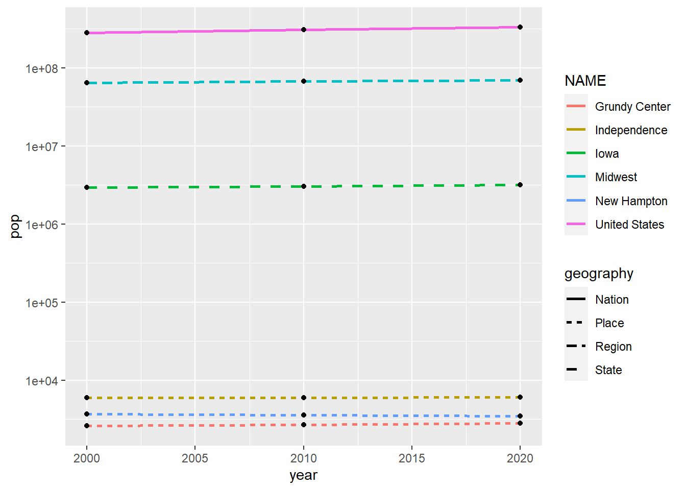

install.packages("tidyverse")
install.packages("tidycensus")Creating a Demographic Profile
This blog will outline creating a demographic profile in R Studio. If you have read my guide on Performing a Demographic Analysis, note that creating a demographic profile is similar. Profiles are similar to analyses because demographic profiles are, in essence, just a different type of demographic analysis. The contrast is that profiles focus on a specific group instead of a broad area.
For this guide, I will walk you through creating a demographic profile for the 2023 AI Housing Project for Data Science for the Public Good. The demographic profile comprised three cities: Grundy Center, Independence, and New Hampton.
There are five steps in a demographic profile:
Determine the focus area.
Decide demographic data.
Gather data.
Transform data.
Visualize data.
Determine Focus Area
The first step in creating a demographic profile is determining your focus area. For the example profile, the focus area was the cities included in the WINVEST project of Data Science for the Public Good. WINVEST conducted a windshield survey of Grundy Center, Independence, and New Hampton. The demographic profile I created is intended to enhance the data from the windshield survey.
I decided to add further detail to my demographic analysis by gathering data on the state, region, and nation associated with my focus areas. These additional geographies add context to the original focus area.
In total, I decided to gather data on the following areas:
Grundy Center
Independence
New Hampton
Iowa
Midwest
United States
Decide Demographic Data
The data you decide to gather for your demographic profile makes the profile. Your options for demographic data are but are not limited to, data on age, race, ethnicity, gender, marital status, income, education, and employment. More detailed data is available about each.
I decided to gather data on the following demographics for the example profile:
Population
Median income
Median home value
Median year home built
Housing occupancy
Reason for vacancy
Data on housing was very important to me. The WINVEST project’s windshield survey was on the housing stock condition in the focus area communities. Thus, I wanted to gather available information on the housing stock from the Decennial Census and the American Community Survey. I chose median home value, median year built, and housing occupancy data because they give a well-rounded analysis of the housing demographics.
Gather Data
Once you have decided on the demographic data you want, it is time to start the data collection process. Many demographic data can be found via the United States Decennial Census or the American Community Survey (ACS). The U.S. census is one of the best places to gather demographic data because it counts every resident in the United States. It has a very low inaccuracy, but the U.S. census is only conducted every ten years. The American Community Survey (ACS) is your best bet for more recent data. The ACS has more detailed demographic data and is conducted every five years for the entirety of the United States and every year for places with a population over 65,000. The ACS does not count every individual resident in the United States and instead relies on surveying a proportion of the population to create estimates of the demographics. Thus, it can be inaccurate and provides a margin of error. It is best used for data on the changing population, housing, and workforce.
To start data collection in R Studio, I installed the Tidyverse and Tidycensus packages and loaded them with the library() function.
library(tidyverse)
library(tidycensus)The Tidyverse package includes a range of functions that make coding in R Studio more user-friendly. It is not necessary for data collection, but it certainly does help. In contrast, the Tidycensus package is essential to data collection. The Tidycensus package lets you pull data directly from the Decennial Census and the ACS using the get_decennial() and get_acs() functions. You only need to specify three arguments to pull data: geography, year, and variable.
get_decennial(geography = "____",
variable = "____",
year = xxxx)
get_acs(geography = "____",
variable = "____",
year = xxxx)To keep this blog short, I will not be running through the process of coding the entire demographic profile. Instead, I will be using the population data as an example. Population data is collected most accurately by the Decennial Census, so for the rest of this guide, we will use get_decennial().
Let’s pull the total population for 2000-2020 at the place, state, region, and nation levels. The Census API variable code for 2000 and 2010 total population is P001001. For the 2020 total population, the API variable code is P1_001N.
# Define the variables before getting the data.
pop00 <- c("pop" = "P001001")
pop10 <- c("pop" = "P001001")
# The API code for total population changed for 2020.
pop20 <- c("pop" = "P1_001N")
###
## National Context: nationPop
# Getting 2000 total population data for the USA.
nation00 <- get_decennial(geography = "us",
year = 2000,
variable = pop00,
output = "wide") %>%
mutate(year = 2000)
# Getting 2010 total population data for the USA.
nation10 <- get_decennial(geography = "us",
year = 2010,
variable = pop10,
output = "wide") %>%
mutate(year = 2010)
# Getting 2020 total population data for the USA.
nation20 <- get_decennial(geography = "us",
year = 2020,
variable = pop20,
output = "wide") %>%
mutate(year = 2020)
###
## Regional Context: regionPop
# Getting 2000 total population data from the Midwest.
region00 <- get_decennial(geography = "region",
year = 2000,
variable = pop00,
output = "wide") %>%
mutate(year = 2000)
# Getting 2010 total population data for the Midwest.
region10 <- get_decennial(geography = "region",
year = 2010,
variable = pop10,
output = "wide") %>%
mutate(year = 2010)
# Getting 2020 total population data for the Midwest.
region20 <- get_decennial(geography = "region",
year = 2020,
variable = pop20,
output = "wide") %>%
mutate(year = 2020)
###
## State Context: statePop
# Getting the 2000 total population data for the state of Iowa from the Decennial Census.
iowa00 <- get_decennial(geography = "state",
state = "IA",
year = 2000,
output = "wide",
variable = pop00) %>%
mutate(year = 2000)
# Getting the 2010 total population data for the state of Iowa from the Decennial Census.
iowa10 <- get_decennial(geography = "state",
state = "IA",
variable = pop10,
year = 2010,
output = "wide") %>%
mutate(year = 2010)
# Getting the 2020 total population data for the state of Iowa from the Decennial Census.
iowa20 <- get_decennial(geography = "state",
state = "IA",
variable = pop20,
year = 2020,
output = "wide") %>%
mutate(year = 2020)
###
## Places:
# Getting 2000 total population data for all places in Iowa.
place00 <- get_decennial(geography = "place",
state = "IA",
year = 2000,
output = "wide",
variables = pop00) %>%
mutate(year = 2000)
place10 <- get_decennial(geography = "place",
state = "IA",
year = 2010,
output = "wide",
variables = pop10) %>%
mutate(year = 2010)
place20 <- get_decennial(geography = "place",
state = "IA",
variable = pop20,
year = 2020,
output = "wide") %>%
mutate(year = 2020)Now that we have collected our total population data for all geographies from 2000-2020, we can start the data transformation process.
Transform Data
The first data transformation we will conduct on our data occurred in the code chunk above. If you look closely, I attached a mutate(year = xxxx) to the end of each pull. mutate() allows you to create new columns and change the contents of existing ones based on arguments. The argument above is year = xxxx.
The next data transformation will reuse the mutate() function. We will add a column for geography using the mutate() function. To bind multiple data frames together, use the bind_rows() function.
# Bind the years together using bind_rows to create data frame for national context.
# Create a new column for geography type.
nationPop <- nation20 %>%
bind_rows(nation10,nation00) %>%
mutate(geography = "Nation")
# Bind the years together using bind_rows to create data frame for regional context.
# Create a new column for geography type.
regionPop <- region20 %>%
bind_rows(region10,region00) %>%
mutate(geography = "Region")
# Bind the years together using bind_rows to create data frame for state context.
# Create a new column for geography type.
statePop <- iowa20 %>%
bind_rows(iowa10,iowa00) %>%
mutate(geography = "State")
# Bind the years together using bind_rows() to create data frame for all places in Iowa.
# Create a new column for geography type.
placePop <- place20 %>%
bind_rows(place10,place00) %>%
mutate(geography = "Place")The code chunk above condensed our twelve data frames to just four and added a new column to specify each geography. Suppose you open the regionPop and placepop data frames. In that case, you will notice more regions and places under the NAME column than the Midwest and our focus area cities. We will use the filter() function on regionPop and placePop to remove unnecessary regions and places.
# Filter for Independence, Grundy Center, and New Hampton.
placePop <- placePop %>%
filter(NAME %in% c("Grundy Center city, Iowa", "Independence city, Iowa", "New Hampton city, Iowa"))
# Filter for Midwest
regionPop <- regionPop %>%
filter(NAME == "Midwest Region") Now we only have the Midwest and focus area cities in our data frames! The Census sometimes adds unnecessary words behind the names of areas. It is doing so for the regionPop and placePop data frames. In regionPop, the NAME column includes the region and the word “region.” The string “city, Iowa” is included in the NAME column for placePop. Both can be removed. To do so, use the str_remove() function inside mutate().
# Use str_remove() to remove "city, Iowa" from behind the place names.
placePop <- placePop %>%
mutate(NAME = str_remove(NAME, " city, Iowa|, Iowa"))
# Use str_remove() to remove " Region" from Midwest.
regionPop <- regionPop %>%
mutate(NAME = str_remove(NAME, " Region")) The final data transformation for the total population data is one we have already done before. The code chunk below combines all geographies in one data frame using bind_rows().
# Combine nationPop, regionPop, statePop, and placePop using bind_rows().
population <- nationPop %>%
bind_rows(regionPop,statePop,placePop)Now that our data is cleaned and organized, we can start making visualizations!
Visualize Data
To visualize data in R Studio, I installed and loaded more packages: ggplot2, scales, and ggthemes.
install.packages("ggplot2")
install.packages("scales")
install.packages("ggthemes")library(ggplot2)
library(scales)
library(ggthemes)The ggplot2 package is required to create a plot in R Studio. With ggplot2 you get access to the function ggplot(), which allows you to create visualizations. ggplot() takes the arguments data and mapping to create a plot. Mapping refers to the x and y coordinates of our data. There are various geoms included in the ggplot2 package that aid in creating a visualization. Here are some examples:
| Geom | Result |
|---|---|
| geom_line() | line graph |
| geom_point() | scatter plot |
| geom_histogram() | histogram |
| geom_bar() | bar chart |
| geom_col() | column chart |
Let’s create a simple line graph for our total population data.
ggplot(data = population, mapping = aes(x = year, y = pop, group = NAME)) +
geom_line()While this is a visualization, it is a bad one. The values on the y-axis are not easily readable, and the lines have no meaning. We know that our data frame has four different geographies, so which one is which? Let’s try adding color to our plot and changing the line type by the geography column.
ggplot(population, aes(x = year, y = pop, group = NAME)) +
geom_line(aes(color = NAME, linetype = geography))Much better, but these lines are a small and hard to read. To improve the visual, change the line size to one and add a log to the y-axis. Add a geom_point() layer to the plot as well.
ggplot(population, aes(x = year, y = pop, group = NAME)) +
geom_line(aes(color = NAME, linetype = geography), linewidth = 1) +
geom_point() +
scale_y_log10()
Let’s add some more details to make this plot even better.
ggplot(population, aes(x = year, y = pop, group = NAME)) +
geom_line(aes(linetype = geography, color = NAME), linewidth = 1)+
geom_point(size = 2)+
scale_y_log10(label = scales::comma) +
scale_x_continuous(limits = c(2000, 2020),
breaks = c(2000,2010,2020))+
labs(title = "Change in Total Population",
y = "Population (log scale)",
subtitle = "2000-2020 Decennial Census",
x = "",
color = "",
linetype = "",
caption = "Variables: P1_001N and P001001")Congratulations! You have made a plot in R Studio. You will have a complete demographic profile after gathering data for all other demographics you chose, transforming them, and creating visualizations.
Example Demographic Profile
Here is an example of the one I created for the 2023 AI Housing Project. Go to week eight of my blog for more information on the code used to create these visualizations.